Italian Paintings from the Hermitage
The extensive collection of Italian painting occupies 30 rooms in the Old and New Hermitage, encompassing its development from the 13th century to the beginning of the 19th century. The pride of the collection are works by the great masters of the Renaissance, Leonardo da Vinci, Raphael, Giorgione, Titian and Michelangelo.
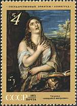
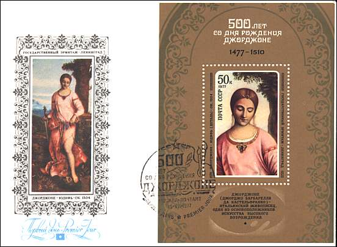
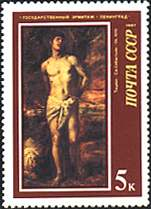
Of about twelve original works by Leonardo known today, the Russian Museums possess two, both in the Hermitage: Madonna with a Flower (The Benois Madonna, 1478) and Madonna Litta (1490-1491).
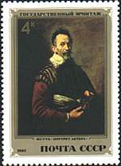
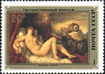
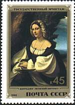
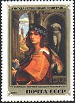
Raffaello Sanzio - Raphael - is also represented by two works: Madonna Conestabile (1502-1503) and The Holy Family (1506). In addition, there are copies of Raphael's famous frescoes in the Vatican Gallery, the Raphael Loggias. The originals were painted by the artists pupils after his design in 1518-1519.
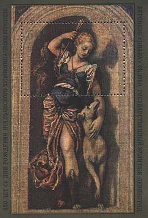
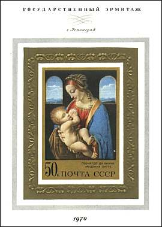
Giorgione's Judith is widely recognized as among the artist's most perfect creations. Tiziano Vecellio, known as Titian, who dominated the Venetian school of art during the first half of the 16th century, is represented mainly by works from his mature period (1559-1570). Just two, The Flight into Egypt (beginning of the 1500s) and Portrait of a Young Woman (about 1530), show the artist's earlier style. Next comes an excellent group of paintings, Danae (1550s), Christ Carrying the Cross, Madonna and Child with Mary Magdalene (all three 1560s). The Penitent Magdalene (1560s) and St Sebastian (1570s), one of the artist's last works, are rightly regarded as masterpieces.
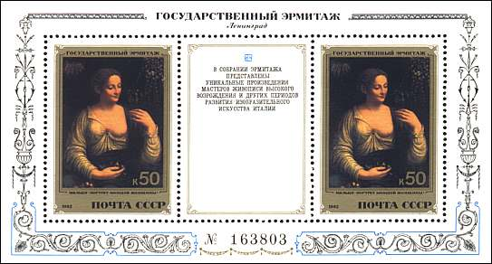
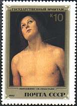
Paintings by Caravaggio, Annibale Carracci, Luca Giordano, Salvatore Rosa, Gianmaria Crespi, Tiepolo, and Francesco Guardi provide a broad view of the development of Italian art of the 17th and the 18th centuries.
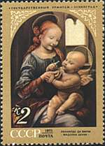
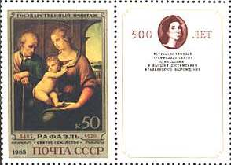
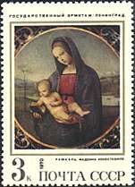
Italian masters of the 19th and 20th centuries are included in the general exhibition of European art of that period.
Other Italian Paintings on this site: Titian , Da Vinci , Raphael Titian Da Vinci Raphael
Hermitage Hermitage Museum